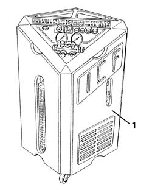

5040A14 air conditioner cooling circuit - check and repair any leaks by tightening fittings
- Path
- Procedures > 50 AUXILIARY UNITS > 5040 AIR CONDITIONING CASING AND COMPONENTS > 5040A air conditioner coolant circuit > 5040A14 air conditioner cooling circuit - check and repair any leaks by tightening fittings
- Kind
- repair procedure (removal / refitting; the operation number is the code)
- Applies to
- all engines; all production periods
- Interactive page
- https://sloeber94.github.io/elrnDB-a156/en/#/3238306
Applies to: all engines; all production periods
Applies to: all engines; all production periods; only with equipment: Air Conditioner
1. Use the special draining reloading unit.
 | Name | Country |
|---|---|---|
- | Station for air conditioning system | 1.826.004.000 |

Applies to: all engines; all production periods; only with equipment: Air Conditioner
Run a certain quantity of coolant R134a (about 200 g) in the system .
Use a leak finder to detect the area where the leak occurs.
Drain the fluid and eliminate the leak by tightening the loosen unions or replacing pipes or damaged components.
Reload the coolant.
5040A10 Air conditioning refrigerant CIRCUIT - Draining and Refilling